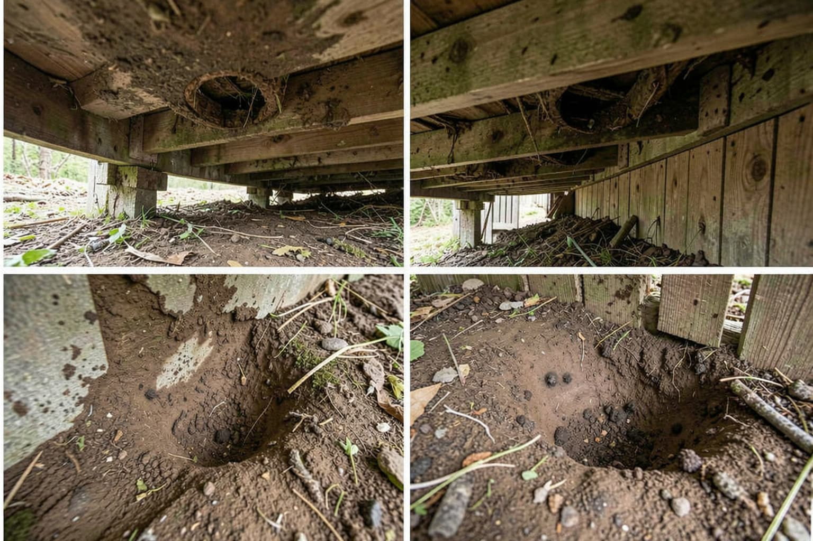
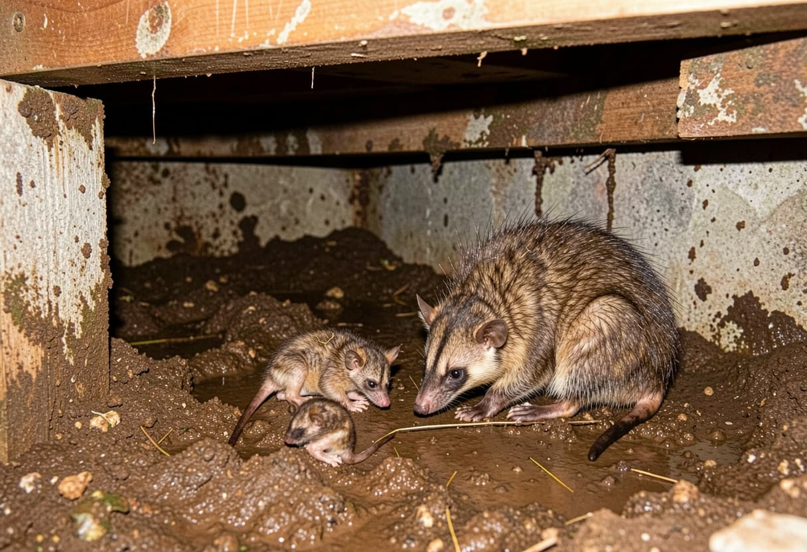
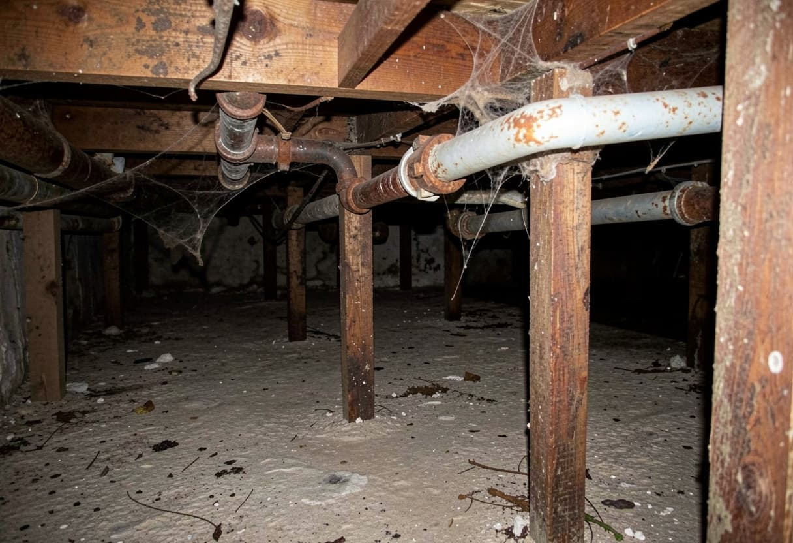

Inspection of the shelter zone
Local providers often start by confirming whether the signs match a skunk den under a deck, an opossum in a crawlspace, a groundhog burrow, or fox use near a shed or fence line, and whether more than one route exists.
Lower Structure Problems
This page focuses on skunks, opossums, groundhogs, and foxes because they often use the protected lower part of a property in different ways. Skunks usually bring odor and shallow digging under decks, opossums create low shelter activity in crawlspaces or porches, groundhogs leave larger burrows near slabs and retaining lines, and foxes may den near sheds or fenced edges. The next step is usually to compare local services for removal, den closure, cleanup, and understructure exclusion.

Skunk odor, opossum shelter under porches, groundhog burrows, fox denning, disturbed skirting, repeat lower-edge activity.
Problem & Property Risk
Wildlife that uses the lower part of a property is usually looking for covered, quiet shelter under decks, porches, sheds, crawlspaces, or foundation edges. Skunks often create the strongest odor concern close to a deck or porch, opossums tend to use crawlspaces and under-porch voids, groundhogs push larger burrows into soil around slabs and retaining edges, and foxes may create recurring den activity near sheds or yard boundaries. Once that happens, the homeowner problem can expand into odor, digging, burrows, soil movement, disturbed skirting, or repeat use of the same understructure zone.
Because these species share similar shelter zones but leave different clues, homeowners often need help distinguishing between odor-heavy skunk use under a deck, opossum movement in a crawlspace, a groundhog burrow near the foundation, and fox denning along a shed or yard edge.

Where This Problem Usually Starts
Service Options
Local providers often start by confirming whether the signs match a skunk den under a deck, an opossum in a crawlspace, a groundhog burrow, or fox use near a shed or fence line, and whether more than one route exists.
Local service discussions may include skunk or opossum removal from under a structure, fox den timing, groundhog burrow-related considerations, or handling of odor-heavy shelter areas before anything is closed.
Homeowners often also need help comparing skirting repair, crawlspace vent security, den closure, odor cleanup, and soil or grade correction so skunks, opossums, groundhogs, or foxes do not return to the same shelter area.
Seasonal & Home-Type Factors
Skunk and fox denning concerns may be more sensitive in spring, especially where under-deck or yard-edge shelter already exists.
Skunk odor, opossum movement, and lower-edge activity around shaded decks and porches can become easier to notice in summer.
Protected lower shelter areas may become more attractive to skunks, opossums, and foxes as outside conditions change.
Low decks, detached sheds, crawlspaces, retaining edges, and lots with dense perimeter cover usually need closer review for skunks, opossums, groundhogs, and foxes.
Signs Homeowners May Notice
